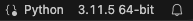
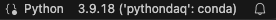

Gereedschap¶
Isolatie: virtual environments¶
Je hebt het misschien al gemerkt: Anaconda neemt veel schijfruimte in beslag. Dat is gek, want Python is best klein. Anaconda bevat alleen veel meer dan Python. Anaconda is een Python-distributie en bevat een enorme verzameling aan packages. Je kunt zelf extra packages installeren met conda of pip. Je loopt dan mogelijk wel tegen problemen aan: packages hebben vaak zelf weer andere packages nodig. En regelmatig ook met een bepaalde versie. Dit kan een ingewikkeld netwerk worden waarbij het installeren van een nieuwe package óf heel lang duurt, óf niet kan vanwege een conflict,1 óf blind
gedaan wordt waarna sommige dingen niet meer willen werken. Alledrie is op te lossen door virtual environments te gebruiken. Geïsoleerde omgevingen met een eigen — veelal kleine — collectie van packages. Soms zelfs met een eigen versie van Python. Je kunt environments aanmaken voor specifieke projecten bijvoorbeeld: een omgeving voor NSP1, een omgeving voor ECPC en een omgeving voor een hobbyproject. Wellicht heb je bij NSP1 een environment aangemaakt om Jupyter Notebooks en een verzameling packages te installeren voor de data-analyse.
Pip vs Conda¶
De package manager van Python is pip. Je kunt hiermee alle Python packages installeren die bestaan uit Python code. NumPy bijvoorbeeld bevat echter ook veel code geschreven in C. Die code moet eerst gecompileerd worden. Dat kan pip óók doen, mits er een C compiler op je computer geïnstalleerd is. Via de Python package index kunnen gelukkig ook zogeheten binary packages verspreid worden waarin de code al is gecompileerd. Er zijn dan losse packages voor Windows, MacOS en Linux. Meestal gaat dit goed, maar helaas niet altijd. Historisch waren NumPy maar vooral ook SciPy een flink probleem. Ook het gebruik van grafische bibliotheken ging vaak moeizaam. Dan was het package wel geïnstalleerd, maar riep hij dat hij systeembibliotheken niet kon vinden. Heel vervelend.
Een ander probleem van pip is dat deze — tot voor kort — geen controle deed op de versies van al geïnstalleerde pakketten. Je kon dus packages installeren die nieuwe versies binnenhaalden van andere packages, waarna al eerder geïnstalleerde packages soms stopten met werken.
Om die reden is conda in het leven geroepen. Conda installeert alleen binary packages, kan naast Python packages ook systeembibliotheken installeren als dat nodig is én doet een uitgebreide controle op alle versies van te installeren en al eerder geïnstalleerde packages zodat alles altijd blijft werken. Nadeel is dat die controle nogal lang kan duren als je al veel geïnstalleerd hebt. Omdat je met conda dus wel heel makkelijk uitgebreide wetenschappelijke packages kon installeren met een mix van Python-, C-, of zelfs Fortrancode is conda (en Anaconda, de distributie) heel populair geworden in de wetenschappelijke wereld. Omdat jullie bij vorige cursussen al gewerkt hebben met Anaconda zullen we dat deze cursus ook gebruiken, maar we gaan veel met pip werken om packages te schrijven die door alle Pythongebruikers gebruikt kunnen worden.
Conda environments¶
Er zijn verschillende tools voor het aanmaken van environments voor Python. Allemaal hebben ze hun voor- en nadelen. Langzamerhand blijven de populairste over. De officiële
is venv, maar op dit moment niet de meest populaire. Binnen een groot deel van de wetenschappelijke gemeenschap is conda de standaardkeuze. Het voordeel van conda ten opzichte van veel andere tools is dat je verschillende environments kunt maken met verschillende versies van Python. Ideaal om te testen of je code ook werkt met de allernieuwste Pythonversie of juist met wat oudere versies.
Je moet je realiseren dat het aanmaken (en weggooien) van een environment heel makkelijk is. Doe dat regelmatig zodat je scherp houdt welke packages je nu echt nodig hebt voor je analyse of voor de software die je schrijft. Hieronder geven we een overzicht van de meest gebruikte commando's om met conda environments te werken.
Info
Conda installeert packages vanuit verschillende channels. De defaults channel bevat packages die af en toe door Anaconda worden getest en samengenomen tot een distributie (versie 2021.05 bijvoorbeeld). Er zijn weinig updates. De conda-forge channel bevat alle nieuwste versies van die packages en bevat ook software die (nog) niet in de defaults channel terecht is gekomen. De conda-forge channel is daarom erg populair, maar er gaat ook regelmatig iets stuk.
Hieronder volgen enkele voorbeelden van het gebruik van conda:
Leeg environment aanmaken met naam 'pythondaq' (leeg = zelfs geen Python)
PS> conda create -n pythondaq
Nieuw environment aanmaken met Python versie 3.10
PS> conda create -n pythondaq python=3.10
Packages installeren vanuit de 'conda-forge' channel en nieuwste Python
Als het environment al bestaat vraagt hij of hij die moet overschrijven met een nieuwe schone versie
PS> conda create -n pythondaq -c conda-forge python
Environment activeren
PS> conda activate pythondaq
Environment deactiveren
PS> conda deactivate
Environment wissen
PS> conda env remove -n pythondaq
Lijst van environments bekijken
PS> conda env list
Nieuw pakket installeren vanuit de conda-forge channel in het ACTIEVE environment
PS> conda install -c conda-forge lmfit
Nieuw environment voor NSP2 met notebooks voor analyse en fits
PS> conda create -n nsp2 -c conda-forge notebook pandas matplotlib lmfit
Package pandas updaten naar nieuwe versie in het ACTIEVE environment
PS> conda update -c conda-forge pandas
Alle packages updaten naar nieuwe versie in het ACTIEVE environment
PS> conda update -c conda-forge --all
Als je scripts schrijft in Visual Studio Code wil je dat ze ook runnen in de omgevingen die je net hebt aangemaakt. Als je in Visual Studio Code een python script opent dan geeft het rechtsonder, in de statusbalk, de huidige Pythonomgeving aan:

Als je daarop klikt2 kun je door de lijst met Pythonomgevingen scrollen. Kies de omgeving die je wilt gebruiken. Let op: als je het environment net hebt aangemaakt dan staat hij er nog niet tussen. Klik dan rechtsbovenin eerst op het Refresh Interpeter list-knopje. Bijvoorbeeld:

Sluit alle oude
terminals met het -icoon als je je muis aan de rechterkant over de namen van de terminals beweegt of in één keer met View > Command Palette > Terminal: Kill All Terminals. Alle nieuwe terminals die je opent zullen de nieuw geselecteerde conda environment actief maken. Wanneer je nu je Pythoncode draait dan is dat binnen deze omgeving. Het kan wel zijn dat hij opeens klaagt over packages die niet geïnstalleerd zijn omdat je dat — in die omgeving — nog niet had gedaan. Geen probleem: installeer ze dan.
Pipx¶
Pythonapplicaties, zoals conda, worden geïnstalleerd als commando dat je kunt aanroepen vanaf de command-line. Maar het is een Pythonapplicatie. En dat betekent dat als je van omgeving wisselt, de applicatie niet meer beschikbaar is. Ook kan het gebeuren dat je packages update of verwijdert waardoor de applicatie niet meer werkt. Met pipx is het mogelijk om dit soort applicaties in een eigen virtual environment te installeren. Je loopt geen risico dat je ze stukmaakt en ze zijn beschikbaar vanuit andere virtual environments. In plaats van:
pipx list bekijk je dan een lijst van geïnstalleerde pakketten.
Je installeert pipx met:
Herstart je terminal en test of het commando pipx werkt. Als je in een terminal in Visual Studio Code werkt moet je dat ook herstarten en als je VS Code gestart hebt vanuit GitHub Desktop moet je óók dat herstarten. Werkt het nog steeds niet, dan zul je volledig uit moeten loggen en weer in moeten loggen om de shellomgeving opnieuw te laden en/of vraag om hulp.
Coding style: Black¶
Code wordt veel vaker gelezen dan geschreven,
is een veel geciteerd gezegde onder programmeurs. Je schrijft je code en zit vervolgens uren te puzzelen om een fout te vinden of hoe je de code het beste kunt uitbreiden. Je zoekt op internet naar voorbeeldcode, je helpt een medestudent of vraagt die om hulp. Heel vaak dus lees je niet je eigen code, maar die van iemand anders. Is dat relevant? Ja! Want die code ziet er anders uit. Iedereen programmeert toch op zijn eigen manier. Het scheelt enorm als de code er tenminste grotendeels hetzelfde uitziet. Het kost je dan minder energie om te lezen. Daarom ook dat de artikelen in wetenschappelijke tijdschriften bijvoorbeeld er allemaal hetzelfde uitzien en de auteur niet de vrijheid krijgt om zélf lettertypes te kiezen. Net zo goed hebben grote organisaties vaak hun eigen coding style ontwikkeld waar alle werknemers zich zoveel mogelijk aan moeten houden.
Python heeft een eigen style guide die je vooral eens door moet lezen.3 Google heeft ook een hele mooie, met duidelijke voorbeelden.4
Fijn dat je code consistenter wordt, maar het moet nu ook weer niet zo zijn dat je uren kwijt bent met de style guides bestuderen of twijfelen waar je een regel code precies moet afbreken. Wel of niet een enter? Om daar vanaf te zijn zijn er verschillende pakketten die je code automatisch aanpassen aan de standaard. Als je de instelling Editor: Format On Save aan zet (staat standaard uit) dan wordt je code aangepast zodra je je bestand opslaat. Black is zo'n formatter en heeft een `eigen mening'. Als je je daar bij neerlegt hoef je bijna niet meer na te denken over hoe je je code precies vormgeeft. De Black website zegt5:
By using Black, you agree to cede control over minutiae of hand-formatting. In return, Black gives you speed, determinism, and freedom from pycodestyle nagging about formatting. You will save time and mental energy for more important matters.
Black is tegenwoordig immens populair en in Visual Studio Code kun je hem gebruiken door de Black Formatter-extensie van Microsoft te installeren. De code in deze handleiding is geformat met Black. In Visual Studio Code, ga naar File en dan naar Preferences > Settings > Editor: Format On Save en vink die aan. De eerste keer dat je je bestand opslaat zal hij vragen of hij Black moet gebruiken, daarna wordt je code altijd netjes gemaakt zodra je je Pythonbestand bewaart.
De volgende code:
s1 = 'Hello'
s2 = "World"
values = [1,2,3,4,5]
f = a * x ** 2 + b * x + c
g = a*x +b
h = A*np.sin(2*pi*f*t+phi) + A2*np.sin(2*pi*f2*t+phi2) + A3*np.sin(2*pi*f3*t+phi3)
wordt door Black omgezet in:
s1 = "Hello"
s2 = "World"
values = [1, 2, 3, 4, 5]
f = a * x**2 + b * x + c
g = a * x + b
h = (
A * np.sin(2 * pi * f * t + phi)
+ A2 * np.sin(2 * pi * f2 * t + phi2)
+ A3 * np.sin(2 * pi * f3 * t + phi3)
)
-
Stel package A heeft package B nodig met versie >= 1.1, maar package C heeft package B nodig met versie 1.0. Nu kunnen packages A en C dus niet tegelijkertijd geïnstalleerd worden. ↩
-
Of: View > Command Palette > Python: Select Interpreter. ↩
-
Guide van Rossum. Pep 8 – style guide for python code. URL: https://www.python.org/dev/peps/pep-0008/. ↩
-
Google. Google python style guide. URL: https://google.github.io/styleguide/pyguide.html. ↩
-
Łukasz Langa. Black, the uncompromising code formatter. URL: https://black.readthedocs.io/en/stable/. ↩